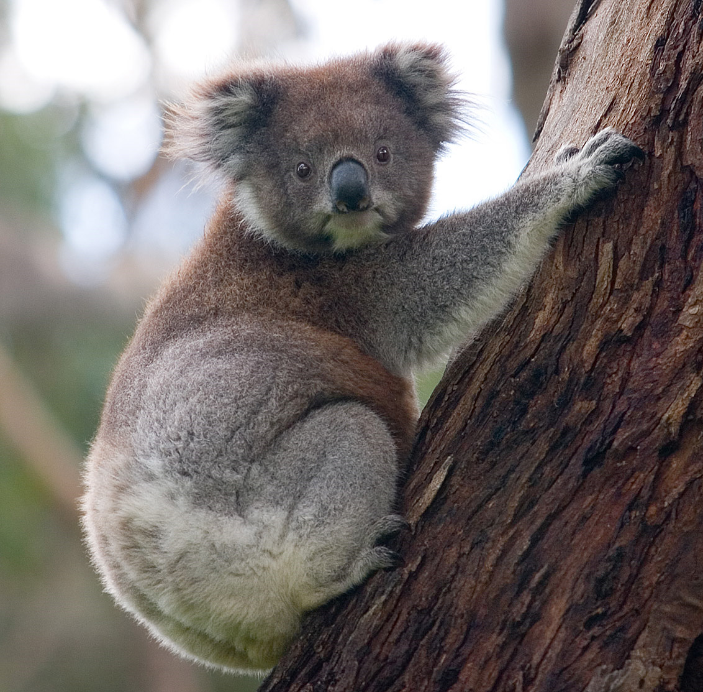
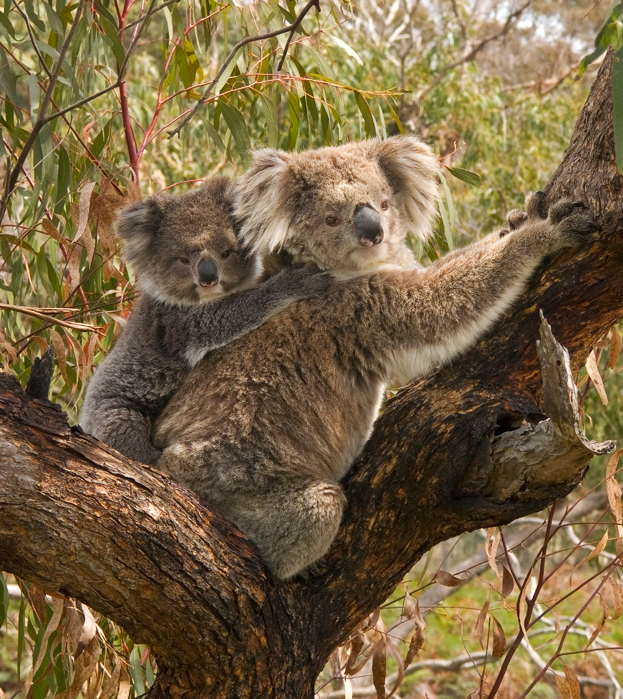
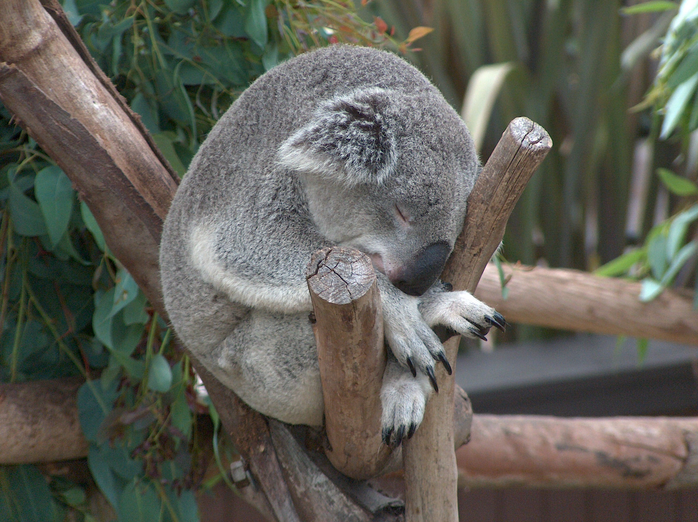

Climbing
Strong limbs and sharp claws help koalas grip bark. Look at how this koala wraps its limbs around the trunk to steady itself.
See how koalas climb, carry their young, and settle into the branches of eucalyptus trees.
Read the field notes
Strong limbs and sharp claws help koalas grip bark. Look at how this koala wraps its limbs around the trunk to steady itself.

After leaving the pouch, a joey can ride on its mother’s back. In this photo, the joey grips her fur while she holds onto the branch.

Koalas spend much of the day resting. A fork in a tree offers a perch where a koala can settle with its body supported on both sides.